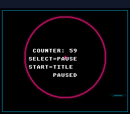

|
OpenSNES
Modern Open-Source SNES Development SDK
|
|
OpenSNES
Modern Open-Source SNES Development SDK
|
Demonstrates the opt-in scene framework: title → counter → pause overlay, three Scene structs swapping via scenePush / scenePop instead of a hand-rolled state machine. It uses the pictures of game_skeleton — the logo, the play square — so the switch and the stack can be compared on the same screens.

| Where | Button | Action |
|---|---|---|
| Title | Start | Push counter scene (counter resets to 0) |
| Counter | Select | Push pause overlay (counter freezes, the square darkens) |
| Counter | Start | Pop back to title (counter discarded) |
| Pause | Select | Pop back to counter (counter resumes from where it was) |
Three callbacks live in this example: title_init/update, counter_init/update, pause_init/update. Each is a small function (8-15 lines) that does one thing.
The program runs in Mode 1, like game_skeleton: BG1 the square, BG2 the logo, BG3 the text in front. The title's init loads all of it once — the title is the root, pushed once by sceneRun — and each scene then chooses its layers with setMainScreen(): the title the logo and the text, the counter the square and the text. Popping back to the title does not re-run its init, so the counter asks it to redraw itself on its next update (title_resume_pending): a resumed scene finds the screen the way the scene above left it.
The pause does not clear the screen: the counter's square and text stay, frozen, since a suspended scene gets no callbacks. pause_init darkens the square with colorMathShadow(LAYER_BG1, 8) (BG1 only, so the text stays bright) and prints PAUSED; leaving it, colorMathDisable() restores it.
The hand-rolled equivalent is a enum State current; switch (current) { ... } plus an array for the suspend stack. ~15 lines of state-machine boilerplate per game. The framework brings it to 5: declare the Scene structs, call sceneRun. The runtime cost is one indirect call per frame (~20 cycles on top of WaitForVBlank's overhead) — negligible against a 357K-cycle frame budget.
Then load scene_stack.sfc in luna or any SNES emulator.
res/field.png and res/logo.png are game_skeleton's pictures, written by devtools/art_assets/build.py (skeleton_field, screen_logo; Néo-Lumen, CC0, assets/neo-lumen/README.md), converted from the settings file beside each.
console, sprite, dma, background, text, input, scene, colormath